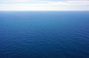

sea
phenomenon

Source: Wikipedia
Wikipedia Page (Something wrong with this association? Let us know.)
Wikidata Page (Something wrong with this association? Let us know.)
Occurs in:
- land-or-sea_surface_radiation~incoming~shortwave__energy_flux
- model_grid_edge~west_sea_water__elevation
- sea_bed_freshwater__net_volume_flux
- sea_bottom_radiation~incoming~longwave~absorbed__energy_flux
- sea_bottom_radiation~incoming~longwave_absorption__absorptance
- sea_bottom_radiation~incoming~longwave__energy_flux
- sea_bottom_radiation~incoming~longwave_reflection__reflectance
- sea_bottom_radiation~incoming~longwave~reflected__energy_flux
- sea_bottom_radiation~incoming~shortwave~absorbed__energy_flux
- sea_bottom_radiation~incoming~shortwave_absorption__absorptance
- sea_bottom_radiation~incoming~shortwave__energy_flux
- sea_bottom_radiation~incoming~shortwave_reflection__reflectance
- sea_bottom_radiation~incoming~shortwave~reflected__energy_flux
- sea_bottom_radiation~incoming~absorbed__energy_flux
- sea_bottom_radiation~incoming_absorption__absorptance
- sea_bottom_radiation~incoming__energy_flux
- sea_bottom_radiation~incoming_reflection__reflectance
- sea_bottom_radiation~incoming~reflected__energy_flux
- sea_bottom_radiation~outgoing~longwave_emission__emittance
- sea_bottom_radiation~outgoing~longwave~emitted__energy_flux
- sea_bottom_sediment_deposition__age
- sea_bottom_sediment~immersed__weight
- sea_bottom_sediment_bulk__mass-per-volume_density
- sea_bottom_sediment__mass-per-volume_density
- sea_bottom_sediment_particle__mass-per-volume_density
- sea_bottom_sediment__fluid_permeability
- sea_bottom_sediment__porosity
- sea_bottom_sediment__thickness
- sea_bottom_sediment__thickness-to-depth_ratio
- sea_bottom_sediment_clay__volume_fraction
- sea_bottom_sediment_grain__mean_of_diameter
- sea_bottom_sediment_layer__thickness
- sea_bottom_sediment_mud__volume_fraction
- sea_bottom_sediment_sand__volume_fraction
- sea_bottom_sediment_silt__volume_fraction
- sea_bottom_surface__elevation
- sea_bottom_surface__latitude
- sea_bottom_surface__longitude
- sea_bottom_surface__slope
- sea_bottom_surface__time_derivative_of_elevation
- sea_bottom_surface__x_derivative_of_elevation
- sea_bottom_surface__y_derivative_of_elevation
- sea_bottom_surface__net_heat_energy_flux
- sea_bottom_surface_water_flowing__normal_component_of_stress
- sea_bottom_surface_water_flowing__x_z_component_of_shear_stress
- sea_bottom_water__magnitude_of_shear_stress
- sea_bottom_water__mass-per-volume_density
- sea_bottom_water__salinity
- sea_bottom_water__temperature
- sea_bottom_water_debris_deposit__initial_length
- sea_bottom_water_debris_flowing__shear_dynamic_viscosity
- sea_bottom_water_debris_flowing__herschel-bulkley_coefficient
- sea_bottom_water_debris_flowing__herschel-bulkley_exponent
- sea_bottom_water_debris_flowing__mass-per-volume_density
- sea_bottom_water_debris_flowing__thickness
- sea_bottom_water_debris_flowing__yield_stress
- sea_bottom_water_debris_flowing_plug-layer__thickness
- sea_bottom_water_debris_flowing_shear-layer__speed
- sea_bottom_water_debris_flowing_shear-layer__thickness
- sea_bottom_water_debris_flowing_top__speed
- sea_bottom_water__net_heat_energy_flux
- sea_ice__age
- sea_ice__albedo
- sea_ice__area
- sea_ice__area_fraction
- sea_ice~melting-point__depression_of_temperature
- sea_ice__draft_depth
- sea_ice__shear_dynamic_viscosity
- sea_ice__volume_dynamic_viscosity
- sea_ice__emissivity
- sea_ice__extent
- sea_ice__freeboard_height
- sea_ice__heat_capacity_ratio
- sea_ice_isentropic-process__compressibility
- sea_ice_isothermal-process__compressibility
- sea_ice__shear_kinematic_viscosity
- sea_ice__volume_kinematic_viscosity
- sea_ice__mass-per-volume_density
- sea_ice_isobaric-process__mass-specific_heat_capacity
- sea_ice_isochoric-process__mass-specific_heat_capacity
- sea_ice_fusion__mass-specific_latent_heat
- sea_ice_sublimation__mass-specific_latent_heat
- sea_ice_meltwater__mass_flux
- sea_ice_meltwater__volume_flux
- sea_ice~melting-point__temperature
- sea_ice__relative_permittivity
- sea_ice__salinity
- sea_ice_sublimation__mass_flux
- sea_ice_sublimation__volume_flux
- sea_ice__thermal_conductivity
- sea_ice__thermal_diffusivity
- sea_ice__thermal_inertia
- sea_ice__thermal_resistivity
- sea_ice__thermal_volume_expansion_coefficient
- sea_ice__thickness
- sea_ice__time_derivative_of_area_fraction
- sea_ice__time_derivative_of_extent
- sea_ice__time_derivative_of_thickness
- sea_ice__time_derivative_of_volume
- sea_ice__volume
- sea_ice_isobaric-process__volume-specific_heat_capacity
- sea_ice_isochoric-process__volume-specific_heat_capacity
- sea_ice_bottom_water__salinity
- sea_ice_bottom_water__temperature
- sea_ice_bottom_water_salt__mass_flux
- sea_ice_radiation~incoming~longwave~absorbed__energy_flux
- sea_ice_radiation~incoming~longwave_absorption__absorptance
- sea_ice_radiation~incoming~longwave_reflection__reflectance
- sea_ice_radiation~incoming~longwave~reflected__energy_flux
- sea_ice_radiation~incoming~longwave_transmission__transmittance
- sea_ice_radiation~incoming~longwave~transmitted__energy_flux
- sea_ice_radiation~incoming~shortwave~absorbed__energy_flux
- sea_ice_radiation~incoming~shortwave_absorption__absorptance
- sea_ice_radiation~incoming~shortwave_reflection__reflectance
- sea_ice_radiation~incoming~shortwave~reflected__energy_flux
- sea_ice_radiation~incoming~shortwave_transmission__transmittance
- sea_ice_radiation~incoming~shortwave~transmitted__energy_flux
- sea_ice_radiation~incoming~absorbed__energy_flux
- sea_ice_radiation~incoming_absorption__absorptance
- sea_ice_radiation~incoming_reflection__reflectance
- sea_ice_radiation~incoming~reflected__energy_flux
- sea_ice_radiation~incoming_transmission__transmittance
- sea_ice_radiation~incoming~transmitted__energy_flux
- sea_ice_radiation~outgoing~longwave_emission__emittance
- sea_ice_radiation~outgoing~longwave~downward__energy_flux
- sea_ice_radiation~outgoing~longwave~upward__energy_flux
- sea_ice_salt__mass_concentration
- sea_ice_salt__volume_concentration
- sea_ice_surface_air__temperature
- sea_photic-zone_bottom__depth
- sea_shoreline__azimuth_angle_of_normal-vector
- sea_shoreline__azimuth_angle_tangent-vector
- sea_shoreline__closure_depth
- sea_shoreline__curvature
- sea_shoreline_axis~x_axis~east__angle
- sea_shoreline_breaking-wave__azimuth_angle_of_phase_velocity
- sea_shoreline_breaking-wave__height
- sea_shoreline_breaking-wave__period
- sea_shoreline_water_wave~incoming__azimuth_angle_of_group_velocity
- sea_shoreline_water_wave~incoming__azimuth_angle_of_left_normal_of_phase_velocity
- sea_shoreline_water_wave~incoming__azimuth_angle_of_phase_velocity
- sea_shoreline_deepwater-wave~incoming__ashton-et-al_approach_angle_asymmetry_parameter
- sea_shoreline_deepwater-wave~incoming__ashton-et-al_approach_angle_highness_parameter
- sea_shoreline_deepwater-wave~incoming__azimuth_angle_of_group_velocity
- sea_shoreline_deepwater-wave~incoming__azimuth_angle_of_left_normal_of_phase_velocity
- sea_shoreline_deepwater-wave~incoming__azimuth_angle_of_phase_velocity
- sea_shoreline_deepwater-wave~incoming__height
- sea_shoreline_deepwater-wave~incoming__period
- sea_shoreline_deepwater-wave~incoming__significant_height
- sea_surface__elevation
- sea_surface__latitude
- sea_surface__longitude
- sea_surface__slope
- sea_surface_air_sea_surface_water__difference_of_temperature
- sea_surface_air__magnitude_of_shear_stress
- sea_surface_air__pressure
- sea_surface_air__reference_pressure
- sea_surface_air__reference_temperature
- sea_surface_air__temperature
- sea_surface_air_carbon-dioxide__partial_pressure
- sea_surface_air_flowing__magnitude_of_shear_velocity
- sea_surface_air_flowing__shear_speed
- sea_surface_air_flowing__speed
- sea_surface_air_flowing__x_component_of_shear_velocity
- sea_surface_air_flowing__x_component_of_velocity
- sea_surface_air_flowing__y_component_of_shear_velocity
- sea_surface_air_flowing__y_component_of_velocity
- sea_surface_air_flowing__z_component_of_velocity
- sea_surface_air_water~vapor__partial_pressure
- sea_surface_air_water~vapor__relative_saturation
- sea_surface_radiation~incoming~shortwave~absorbed__energy_flux
- sea_surface_radiation~incoming~shortwave_absorption__absorptance
- sea_surface_radiation~incoming~shortwave__energy_flux
- sea_surface_radiation~incoming~shortwave_reflection__reflectance
- sea_surface_radiation~incoming~shortwave~reflected__energy_flux
- sea_surface_radiation~outgoing~longwave__energy_flux
- sea_surface_storm_water_surge__height
- sea_surface_water__anomaly_of_geopotential_height
- sea_surface_water__anomaly_of_temperature
- sea_surface_water_evaporation__mass_flux
- sea_surface_water_evaporation__volume_flux
- sea_surface_water__geopotential_height
- sea_surface_water__mass-per-volume_density
- sea_surface_water_precipitation__leq_volume_flux
- sea_surface_water_precipitation__mass_flux
- sea_surface_water__salinity
- sea_surface_water__temperature
- sea_surface_water_carbon-dioxide__partial_pressure
- sea_surface_water__net_latent_heat_energy_flux
- sea_surface_water__net_sensible_heat_energy_flux
- sea_surface_water_tide_constituents__amplitude
- sea_surface_water_tide_constituent-2mk3__amplitude
- sea_surface_water_tide_constituent-2mk3__angular_speed
- sea_surface_water_tide_constituent-2mk3__period
- sea_surface_water_tide_constituent-2mk3__phase_angle
- sea_surface_water_tide_constituent-2mk3_amphidromic-points__latitude
- sea_surface_water_tide_constituent-2mk3_amphidromic-points__longitude
- sea_surface_water_tide_constituent-2n2__amplitude
- sea_surface_water_tide_constituent-2n2__angular_speed
- sea_surface_water_tide_constituent-2n2__period
- sea_surface_water_tide_constituent-2n2__phase_angle
- sea_surface_water_tide_constituent-2q1__amplitude
- sea_surface_water_tide_constituent-2q1__angular_speed
- sea_surface_water_tide_constituent-2q1__period
- sea_surface_water_tide_constituent-2q1__phase_angle
- sea_surface_water_tide_constituent-2sm2__amplitude
- sea_surface_water_tide_constituent-2sm2__angular_speed
- sea_surface_water_tide_constituent-2sm2__period
- sea_surface_water_tide_constituent-2sm2__phase_angle
- sea_surface_water_tide_constituent-j1__amplitude
- sea_surface_water_tide_constituent-j1__angular_speed
- sea_surface_water_tide_constituent-j1__period
- sea_surface_water_tide_constituent-j1__phase_angle
- sea_surface_water_tide_constituent-k1__amplitude
- sea_surface_water_tide_constituent-k1__angular_speed
- sea_surface_water_tide_constituent-k1__period
- sea_surface_water_tide_constituent-k1__phase_angle
- sea_surface_water_tide_constituent-k2__amplitude
- sea_surface_water_tide_constituent-k2__angular_speed
- sea_surface_water_tide_constituent-k2__period
- sea_surface_water_tide_constituent-k2__phase_angle
- sea_surface_water_tide_constituent-l2__amplitude
- sea_surface_water_tide_constituent-l2__angular_speed
- sea_surface_water_tide_constituent-l2__period
- sea_surface_water_tide_constituent-l2__phase_angle
- sea_surface_water_tide_constituent-lam2__amplitude
- sea_surface_water_tide_constituent-lam2__angular_speed
- sea_surface_water_tide_constituent-lam2__period
- sea_surface_water_tide_constituent-lam2__phase_angle
- sea_surface_water_tide_constituent-m1__amplitude
- sea_surface_water_tide_constituent-m1__angular_speed
- sea_surface_water_tide_constituent-m1__period
- sea_surface_water_tide_constituent-m1__phase_angle
- sea_surface_water_tide_constituent-m2__amplitude
- sea_surface_water_tide_constituent-m2__angular_speed
- sea_surface_water_tide_constituent-m2__period
- sea_surface_water_tide_constituent-m2__phase_angle
- sea_surface_water_tide_constituent-m3__amplitude
- sea_surface_water_tide_constituent-m3__angular_speed
- sea_surface_water_tide_constituent-m3__period
- sea_surface_water_tide_constituent-m3__phase_angle
- sea_surface_water_tide_constituent-m4__amplitude
- sea_surface_water_tide_constituent-m4__angular_speed
- sea_surface_water_tide_constituent-m4__period
- sea_surface_water_tide_constituent-m4__phase_angle
- sea_surface_water_tide_constituent-m6__amplitude
- sea_surface_water_tide_constituent-m6__angular_speed
- sea_surface_water_tide_constituent-m6__period
- sea_surface_water_tide_constituent-m6__phase_angle
- sea_surface_water_tide_constituent-m8__amplitude
- sea_surface_water_tide_constituent-m8__angular_speed
- sea_surface_water_tide_constituent-m8__period
- sea_surface_water_tide_constituent-m8__phase_angle
- sea_surface_water_tide_constituent-mf__amplitude
- sea_surface_water_tide_constituent-mf__angular_speed
- sea_surface_water_tide_constituent-mf__period
- sea_surface_water_tide_constituent-mf__phase_angle
- sea_surface_water_tide_constituent-mk3__amplitude
- sea_surface_water_tide_constituent-mk3__angular_speed
- sea_surface_water_tide_constituent-mk3__period
- sea_surface_water_tide_constituent-mk3__phase_angle
- sea_surface_water_tide_constituent-mm__amplitude
- sea_surface_water_tide_constituent-mm__angular_speed
- sea_surface_water_tide_constituent-mm__period
- sea_surface_water_tide_constituent-mm__phase_angle
- sea_surface_water_tide_constituent-mn4__amplitude
- sea_surface_water_tide_constituent-mn4__angular_speed
- sea_surface_water_tide_constituent-mn4__period
- sea_surface_water_tide_constituent-mn4__phase_angle
- sea_surface_water_tide_constituent-ms4__amplitude
- sea_surface_water_tide_constituent-ms4__angular_speed
- sea_surface_water_tide_constituent-ms4__period
- sea_surface_water_tide_constituent-ms4__phase_angle
- sea_surface_water_tide_constituent-msf__amplitude
- sea_surface_water_tide_constituent-msf__angular_speed
- sea_surface_water_tide_constituent-msf__period
- sea_surface_water_tide_constituent-msf__phase_angle
- sea_surface_water_tide_constituent-mu2__amplitude
- sea_surface_water_tide_constituent-mu2__angular_speed
- sea_surface_water_tide_constituent-mu2__period
- sea_surface_water_tide_constituent-mu2__phase_angle
- sea_surface_water_tide_constituent-n2__amplitude
- sea_surface_water_tide_constituent-n2__angular_speed
- sea_surface_water_tide_constituent-n2__period
- sea_surface_water_tide_constituent-n2__phase_angle
- sea_surface_water_tide_constituent-nu2__amplitude
- sea_surface_water_tide_constituent-nu2__angular_speed
- sea_surface_water_tide_constituent-nu2__period
- sea_surface_water_tide_constituent-nu2__phase_angle
- sea_surface_water_tide_constituent-o1__amplitude
- sea_surface_water_tide_constituent-o1__angular_speed
- sea_surface_water_tide_constituent-o1__period
- sea_surface_water_tide_constituent-o1__phase_angle
- sea_surface_water_tide_constituent-oo1__amplitude
- sea_surface_water_tide_constituent-oo1__angular_speed
- sea_surface_water_tide_constituent-oo1__period
- sea_surface_water_tide_constituent-oo1__phase_angle
- sea_surface_water_tide_constituent-oo2__amplitude
- sea_surface_water_tide_constituent-oo2__angular_speed
- sea_surface_water_tide_constituent-oo2__period
- sea_surface_water_tide_constituent-oo2__phase_angle
- sea_surface_water_tide_constituent-p1__amplitude
- sea_surface_water_tide_constituent-p1__angular_speed
- sea_surface_water_tide_constituent-p1__period
- sea_surface_water_tide_constituent-p1__phase_angle
- sea_surface_water_tide_constituent-q1__amplitude
- sea_surface_water_tide_constituent-q1__angular_speed
- sea_surface_water_tide_constituent-q1__period
- sea_surface_water_tide_constituent-q1__phase_angle
- sea_surface_water_tide_constituent-r2__amplitude
- sea_surface_water_tide_constituent-r2__angular_speed
- sea_surface_water_tide_constituent-r2__period
- sea_surface_water_tide_constituent-r2__phase_angle
- sea_surface_water_tide_constituent-rho__amplitude
- sea_surface_water_tide_constituent-rho__angular_speed
- sea_surface_water_tide_constituent-rho__period
- sea_surface_water_tide_constituent-rho__phase_angle
- sea_surface_water_tide_constituent-s1__amplitude
- sea_surface_water_tide_constituent-s1__angular_speed
- sea_surface_water_tide_constituent-s1__period
- sea_surface_water_tide_constituent-s1__phase_angle
- sea_surface_water_tide_constituent-s2__amplitude
- sea_surface_water_tide_constituent-s2__angular_speed
- sea_surface_water_tide_constituent-s2__period
- sea_surface_water_tide_constituent-s2__phase_angle
- sea_surface_water_tide_constituent-s4__amplitude
- sea_surface_water_tide_constituent-s4__angular_speed
- sea_surface_water_tide_constituent-s4__period
- sea_surface_water_tide_constituent-s4__phase_angle
- sea_surface_water_tide_constituent-s6__amplitude
- sea_surface_water_tide_constituent-s6__angular_speed
- sea_surface_water_tide_constituent-s6__period
- sea_surface_water_tide_constituent-s6__phase_angle
- sea_surface_water_tide_constituent-sa__amplitude
- sea_surface_water_tide_constituent-sa__angular_speed
- sea_surface_water_tide_constituent-sa__period
- sea_surface_water_tide_constituent-sa__phase_angle
- sea_surface_water_tide_constituent-ssa__amplitude
- sea_surface_water_tide_constituent-ssa__angular_speed
- sea_surface_water_tide_constituent-ssa__period
- sea_surface_water_tide_constituent-ssa__phase_angle
- sea_surface_water_tide_constituent-t2__amplitude
- sea_surface_water_tide_constituent-t2__angular_speed
- sea_surface_water_tide_constituent-t2__period
- sea_surface_water_tide_constituent-t2__phase_angle
- sea_surface_water_wave__amplitude
- sea_surface_water_wave__angular_frequency
- sea_surface_water_wave__angular_wavenumber
- sea_surface_water_breaking-wave__volume_fraction
- sea_surface_water_breaking-wave__height
- sea_surface_water_breaking-wave__height-to-depth_ratio
- sea_surface_water_wave__energy-per-area_density
- sea_surface_water_wave__frequency
- sea_surface_water_wave__group-speed-to-phase-speed_ratio
- sea_surface_water_wave__group_speed
- sea_surface_water_wave__height
- sea_surface_water_wave__intrinsic_angular_frequency
- sea_surface_water_wave__max_of_orbital_speed
- observation_sea_surface_water_wave__angular_frequency
- sea_surface_water_wave__orbital_speed
- sea_surface_water_wave__period
- sea_surface_water_wave__phase_angle
- sea_surface_water_wave__phase_speed
- sea_surface_water_wave__power
- sea_surface_water_wave_refraction__angle
- sea_surface_water_wave__significant_height
- sea_surface_water_wave__slope
- sea_surface_water_wave__time_integral_from_start_of_cosine_of_product_of_angular_frequency_and_time
- sea_surface_water_wave__time_mean_of_height
- sea_surface_water_wave__time_median_of_height
- sea_surface_water_wave__wavelength
- sea_surface_water_wave__wavenumber
- sea_surface_water_wave_crest_x-section_vertex__angle
- sea_surface_water_wave_crestline__power-per-length_density
- sea_surface_water_wave_ray__incidence_angle
- sea_water__anomaly_of_mass-per-volume_density
- sea_water__azimuth_angle_of_gradient_of_salinity
- sea_water__azimuth_angle_of_gradient_of_temperature
- sea_water__brunt-vaisala_frequency
- sea_water__depth
- sea_water__east_derivative_of_salinity
- sea_water__east_derivative_of_temperature
- sea_water__eddy_viscosity
- sea_water__electrical_conductivity
- sea_water__elevation_angle_of_gradient_of_salinity
- sea_water__elevation_angle_of_gradient_of_temperature
- sea_water_flowing__speed
- sea_water__heat_capacity_ratio
- sea_water_isentropic-process__compressibility
- sea_water_isothermal-process__compressibility
- sea_water__magnitude_of_gradient_of_salinity
- sea_water__magnitude_of_gradient_of_temperature
- sea_water__magnitude_of_vorticity
- sea_water__mass-per-volume_density
- sea_water_isobaric-process__mass-specific_heat_capacity
- sea_water_isochoric-process__mass-specific_heat_capacity
- sea_water_fusion__mass-specific_latent_heat
- sea_water_vaporization__mass-specific_latent_heat
- sea_water__mass-per-volume_density
- sea_water__north_derivative_of_salinity
- sea_water__north_derivative_of_temperature
- sea_water__osmotic_pressure
- sea_water__potential_temperature
- sea_water__salinity
- sea_water__secchi_depth
- sea_water__static_pressure
- sea_water__temperature
- sea_water__thermal_conductivity
- sea_water__thermal_inertia
- sea_water__thermal_resistivity
- sea_water__thermal_volume_expansion_coefficient
- sea_water__time_average_of_square_of_potential_temperature
- sea_water__time_average_of_square_of_salinity
- sea_water__time_derivative_of_north_component_of_velocity
- sea_water__time_derivative_of_temperature
- sea_water__time_derivative_of_total_pressure
- sea_water_isobaric-process__volume-specific_heat_capacity
- sea_water_isochoric-process__volume-specific_heat_capacity
- sea_water__x_derivative_of_salinity
- sea_water__x_derivative_of_temperature
- sea_water__y_derivative_of_salinity
- sea_water__y_derivative_of_temperature
- sea_water__z_derivative_of_salinity
- sea_water__z_derivative_of_temperature
- sea_water_above-sea_bottom__height
- sea_water_below-sea_surface__depth
- sea_water_biota__mass-per-volume_density
- sea_water_biota__mass_concentration
- sea_water_to-sea_bottom__depth
- sea_water_carbon-dioxide__mass_concentration
- sea_water_carbon-dioxide__partial_pressure
- sea_water_carbon-dioxide__solubility
- sea_water_carbon-dioxide__volume_concentration
- sea_water_longshore-current__speed
- sea_water_longshore-current__thickness
- sea_water_longshore-current__width
- sea_water_rip-current__length
- sea_water_rip-current__mean_of_speed
- sea_water_rip-current__thickness
- sea_water_rip-current_neck__width
- sea_water_diatoms-as-carbon__mass_concentration
- sea_water_diatoms-as-chlorophyll__mass_concentration
- sea_water_diatoms-as-nitrogen__mass_concentration
- sea_water__turbulent_kinetic_energy_diffusivity
- sea_water__horizontal_component_of_turbulent_kinetic_energy_diffusivity
- sea_water__vertical_component_of_turbulent_kinetic_energy_diffusivity
- sea_water_flowing__azimuth_angle_of_bolus_velocity
- sea_water_flowing__azimuth_angle_of_gradient_of_pressure
- sea_water_flowing__azimuth_angle_of_momentum
- sea_water_flowing__azimuth_angle_of_stokes_drift_velocity
- sea_water_flowing__azimuth_angle_of_velocity
- sea_water_flowing__azimuth_angle_of_vorticity
- sea_water_flowing__down_component_of_vorticity
- sea_water_flowing__down_east_component_of_reynolds_stress
- sea_water_flowing__down_east_component_of_stress
- sea_water_flowing__down_east_component_of_viscous_stress
- sea_water_flowing__down_north_component_of_stress
- sea_water_flowing__dynamic_pressure
- sea_water_flowing__east_component_of_bolus_velocity
- sea_water_flowing__east_component_of_momentum
- sea_water_flowing__east_component_of_velocity
- sea_water_flowing__east_component_of_vorticity
- sea_water_flowing__east_derivative_of_pressure
- sea_water_flowing__east_east_component_of_reynolds_stress
- sea_water_flowing__east_east_component_of_stress
- sea_water_flowing__east_east_component_of_viscous_stress
- sea_water_flowing__east_north_component_of_reynolds_stress
- sea_water_flowing__east_north_component_of_stress
- sea_water_flowing__east_north_component_of_viscous_stress
- sea_water_flowing__east_up_component_of_reynolds_stress
- sea_water_flowing__east_up_component_of_stress
- sea_water_flowing__east_up_component_of_viscous_stress
- sea_water_flowing__elevation_angle_of_bolus_velocity
- sea_water_flowing__elevation_angle_of_gradient_of_pressure
- sea_water_flowing__elevation_angle_of_momentum
- sea_water_flowing__elevation_angle_of_stokes_drift_velocity
- sea_water_flowing__elevation_angle_of_velocity
- sea_water_flowing__elevation_angle_of_vorticity
- sea_water_flowing__magnitude_of_bolus_velocity
- sea_water_flowing__magnitude_of_gradient_of_pressure
- sea_water_flowing__magnitude_of_momentum
- sea_water_flowing__magnitude_of_stokes_drift_velocity
- sea_water_flowing__magnitude_of_stress
- sea_water_flowing__magnitude_of_velocity
- sea_water_flowing__magnitude_of_vorticity
- sea_water_flowing__north_component_of_bolus_velocity
- sea_water_flowing__north_component_of_momentum
- sea_water_flowing__north_component_of_velocity
- sea_water_flowing__north_component_of_vorticity
- sea_water_flowing__north_derivative_of_pressure
- sea_water_flowing__north_north_component_of_reynolds_stress
- sea_water_flowing__north_north_component_of_stress
- sea_water_flowing__north_north_component_of_viscous_stress
- sea_water_flowing__north_up_component_of_reynolds_stress
- sea_water_flowing__north_up_component_of_stress
- sea_water_flowing__north_up_component_of_viscous_stress
- sea_water_flowing__south_component_of_vorticity
- sea_water_flowing__speed
- sea_water_flowing__time_average_of_z_integral_of_square_of_x_component_of_momentum
- sea_water_flowing__time_average_of_z_integral_of_square_of_y_component_of_momentum
- sea_water_flowing__total_pressure
- sea_water_flowing__turbulent_kinetic_energy
- sea_water_flowing__up_component_of_bolus_velocity
- sea_water_flowing__up_component_of_momentum
- sea_water_flowing__up_component_of_velocity
- sea_water_flowing__up_component_of_vorticity
- sea_water_flowing__up_derivative_of_pressure
- sea_water_flowing__up_up_component_of_reynolds_stress
- sea_water_flowing__up_up_component_of_stress
- sea_water_flowing__up_up_component_of_viscous_stress
- sea_water_flowing__west_component_of_vorticity
- sea_water_flowing__x_component_of_bolus_velocity
- sea_water_flowing__x_component_of_momentum
- sea_water_flowing__x_component_of_stokes_drift_velocity
- sea_water_flowing__x_component_of_velocity
- sea_water_flowing__x_component_of_vorticity
- sea_water_flowing__x_derivative_of_pressure
- sea_water_flowing__x_x_component_of_radiation_stress
- sea_water_flowing__x_x_component_of_reynolds_stress
- sea_water_flowing__x_x_component_of_stress
- sea_water_flowing__x_x_component_of_viscous_stress
- sea_water_flowing__x_y_component_of_radiation_stress
- sea_water_flowing__x_y_component_of_reynolds_stress
- sea_water_flowing__x_y_component_of_stress
- sea_water_flowing__x_y_component_of_viscous_stress
- sea_water_flowing__x_z_component_of_reynolds_stress
- sea_water_flowing__x_z_component_of_stress
- sea_water_flowing__x_z_component_of_viscous_stress
- sea_water_flowing__y_component_of_bolus_velocity
- sea_water_flowing__y_component_of_momentum
- sea_water_flowing__y_component_of_stokes_drift_velocity
- sea_water_flowing__y_component_of_velocity
- sea_water_flowing__y_component_of_vorticity
- sea_water_flowing__y_derivative_of_pressure
- sea_water_flowing__y_y_component_of_radiation_stress
- sea_water_flowing__y_y_component_of_reynolds_stress
- sea_water_flowing__y_y_component_of_stress
- sea_water_flowing__y_y_component_of_viscous_stress
- sea_water_flowing__y_z_component_of_reynolds_stress
- sea_water_flowing__y_z_component_of_stress
- sea_water_flowing__y_z_component_of_viscous_stress
- sea_water_flowing__z_component_of_bolus_velocity
- sea_water_flowing__z_component_of_momentum
- sea_water_flowing__z_component_of_stokes_drift_velocity
- sea_water_flowing__z_component_of_velocity
- sea_water_flowing__z_component_of_vorticity
- sea_water_flowing__z_derivative_of_pressure
- sea_water_flowing__z_integral_of_u_component_of_momentum
- sea_water_flowing__z_integral_of_v_component_of_momentum
- sea_water_flowing__z_integral_of_x_x_component_of_radiation_stress
- sea_water_flowing__z_integral_of_x_y_component_of_radiation_stress
- sea_water_flowing__z_integral_of_y_y_component_of_radiation_stress
- sea_water_flowing__z_x_component_of_radiation_stress
- sea_water_flowing__z_y_component_of_radiation_stress
- sea_water_flowing__z_z_component_of_reynolds_stress
- sea_water_flowing__z_z_component_of_stress
- sea_water_flowing__z_z_component_of_viscous_stress
- sea_water__horizontal_component_of_heat_diffusivity
- sea_water__vertical_component_of_heat_diffusivity
- sea_water_magnesium-chloride__molar_concentration
- sea_water_magnesium-sulfate__mass_concentration
- sea_water_magnesium-sulfate__molar_concentration
- sea_water_magnesium-sulfate__solubility
- sea_water_magnesium-sulfate__volume_concentration
- sea_water_oxygen__volume_fraction
- sea_water_potassium-chloride__mass_concentration
- sea_water_potassium-chloride__molar_concentration
- sea_water_potassium-chloride__solubility
- sea_water_potassium-chloride__volume_concentration
- sea_water_salt__horizontal_component_of_mass_diffusivity
- sea_water_salt__vertical_component_of_mass_diffusivity
- sea_water_sediment~suspended__mass_concentration
- sea_water_sediment~suspended__volume_concentration
- sea_water_sodium-chloride__mass_concentration
- sea_water_sodium-chloride__molar_concentration
- sea_water_sodium-chloride__solubility
- sea_water_sodium-chloride__volume_concentration
- sea_water_surface__elevation
- sea_water_tide__period
- sea_water_tide__range_of_depth
- sea_water_internal-gravity-wave__amplitude
- sea_water_internal-gravity-wave__angular_frequency
- sea_water_internal-gravity-wave__angular_wavenumber
- sea_water_internal-gravity-wave__frequency
- sea_water_internal-gravity-wave__period
- sea_water_internal-gravity-wave__wavelength
- sea_water_internal-gravity-wave__wavenumber
- sea_water_internal-gravity-wave__group_speed
- sea_water_internal-gravity-wave__phase_speed
- sea_water_internal-gravity-wave__wavelength
- sea_water_aphotic-zone_top__depth
- sea_water_photic-zone_bottom__depth
- sea_water_surf-zone__width